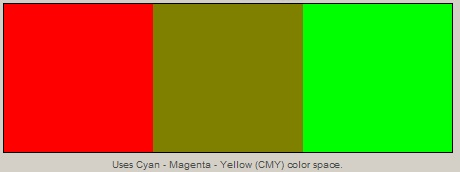

Combinations of two basic, pre-determined colors can be made in the Compare Colors tab panel to see how the result differs between pigment (such as with paint) and light (such as with TV and computer screens). Red, yellow, green, cyan, blue, and magenta may be selected two at a time, with the pigment and light results displayed next to each other simultaneously.
